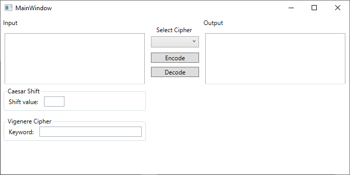
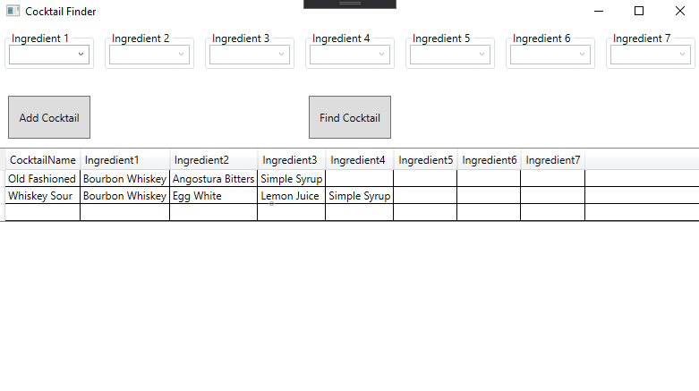

Projects
I just recently started porting my projects over to GitHub. More projects will be added in the near future.
DecoderEncoder
This application allows the user to encode and decode messages using various ciphers.
Cocktail Finder
This application allows users to find a cocktail they can make using ingredients they have on hand.
